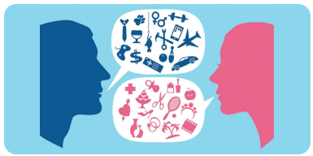

ROLES Y ESTEREOTIPOS
La sociedad plantea ideas sobre cómo se espera que los hombres y las mujeres se vistan, se comporten y se presenten
¿QUÉ SON LOS ROLES?
Los roles definen cómo se espera que actuemos, hablemos, nos vistamos, y nos comportemos según nuestro sexo asignado al nacer.
MUJERES Y NIÑAS
Ser educadas, complacientes, maternales y que vistan de manera femenina.
VARONES Y NIÑOS
Ser fuertes, agresivos, intrépidos, protectores, proveer y que vistan de manera masculina
LOS 4 ESTEREOTIPOS MAS COMUNES
Personalidad:
Mujeres: Se espera que las mujeres sean complacientes y emotivas.
Varones: Sean seguros de sí mismos y agresivos.
Comportamientos domésticos:
Mujeres: Se espera que se encarguen de la crianza, cocinen y limpien la casa.
Varones: Se espera que se encarguen de las finanzas, de cuidar el auto y de las reparaciones del hogar.
Ocupaciones/Profesiones:
Se asume rápidamente que enseñar (maestra) y la enfermería son para mujeres, mientras que quienes se dedican a la medicina (doctores), a la ingeniería o la albañilería son para hombres.
Aspecto físico:
Mujeres: Se espera que sean delgadas, que usen maquillaje y sean elegantes.
Varones: Se espera que sean altos, que tengan el pelo corto y sean musculosos.